3D Scanning and 3d printing
This week lecture is about 3d scan and printing world
The main assignment is to create something for 3d printing that could be not realized whit any subtractive manufacture process.
I'm in the sector of home-made 3d printing from 2 years so i made a lot of thing, and in this lecture i try to push to the limit this technology and my personal skill and 3d printer.
The main problem about 3d printing is that you can not print something that doesn't have a support under it, and as high are the degree of the overhang as the the difficulty goes up.
You can play around some detail on the process of 3d printing and by modifying them you can have a nice result but the problem will be never totally solved.
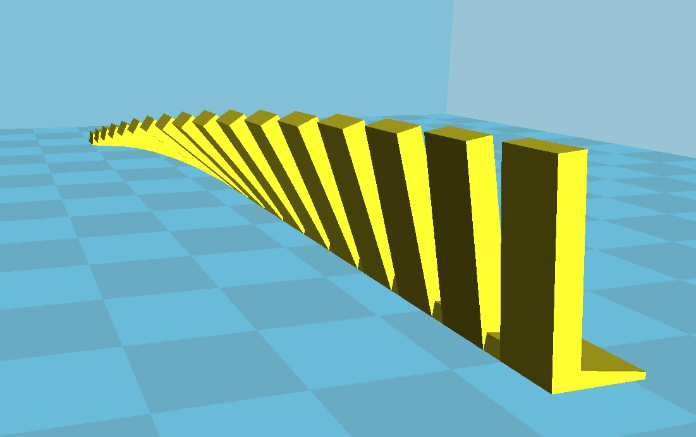
To experiment this i use the occasion of my sister birthday to print for her a "fake" reflex ( she want a reflex for present but we are late for buying the chosen one).
(to be honest this experimentation was not made on pupose, because i make the support on cura but i forget to set the right overhang angle).
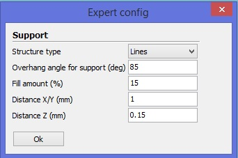
I found a free 3d file of a reflex, i made some little work to make it printable whit mesh mixer, like the control of the minimum wall thickness.
The process to check this thing is simple and many guide can be found on the web, the parameter to set is the minimum distance between the wall of the mash the user want and the program run the process and recalculate the location of the mash.
Is a heavy calculation process so sometimes if the file contain a large number of triangles, the program can crash, so be patient and try it until you get the final file.
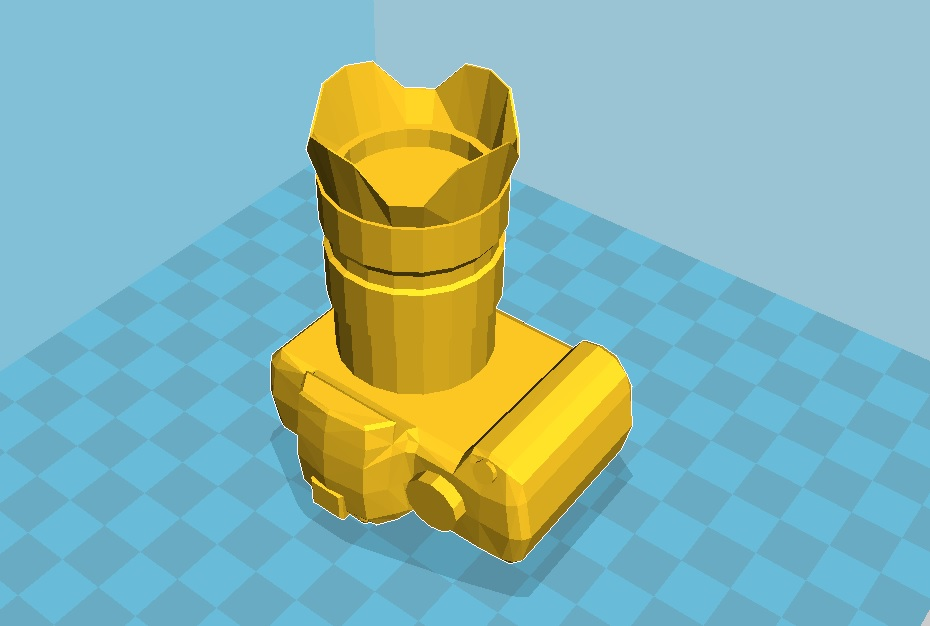
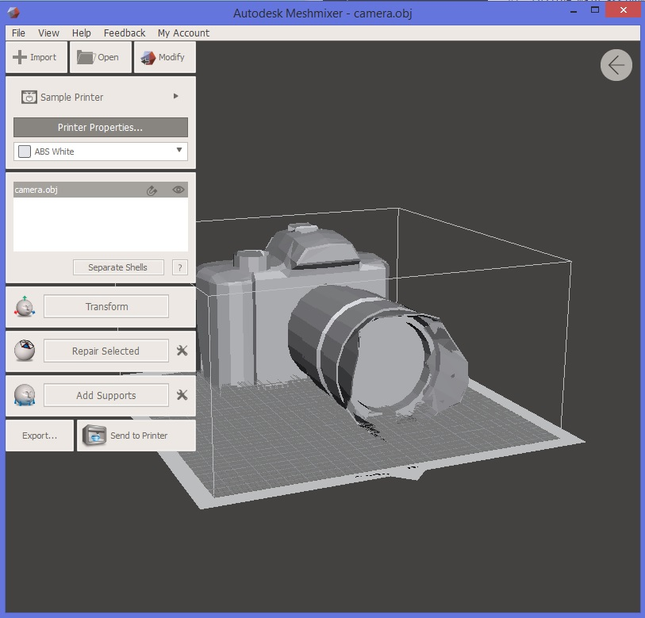
HERE link to reflex file webpage.
Download the OBJ file of the reflex modified
And here come the error i made, as shown in the picture i set the overhang angle at 85 degree, it means that the support will be generated only for the pieces that are orizzontal to the printing surface, and from 85 to 0 will be not generated.
So as you can see in the picture the border of the body of the reflex have a curved corner so the angle will be less than 85 ( about 80, for setting see picture above)
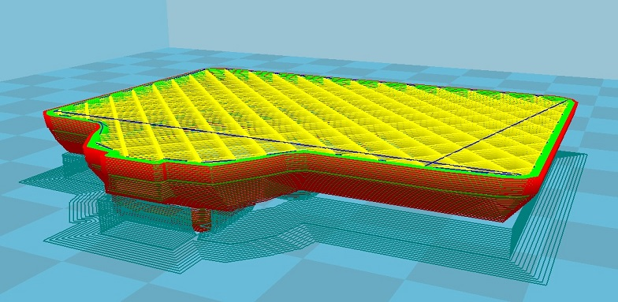
Usually when the 3d printing object are like this, the printed part will warp inside because of the tension of the material and the print will not go well.
But for my fortune and merit i have a well setted printer whit a will ventilated hotend and it will cause the plastic to have a fast cooling after the deposition of the material that cause the stability in the last printed layer.
The fact that i set to make first the infill and after the perimeter helped a lot to keep connected the material.
You can see the result in the picture below, only for information the overhang is 4-5mm long in a variation of 1mm thickness.
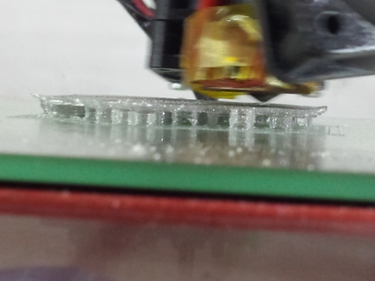
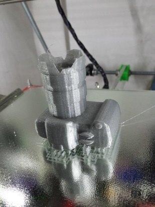
The second thing i make for push the limit of 3d printing is matching dimension on critical application.
3d printing is less prise compared to milling process, because there are a lot of parameter thaht count in this process.
We can divide this factor in 2 big classes;
- one is based on the physical factor,( lice temperature of plastic, )the hardness of the plastic during deposition, the precision of the hotend, the diameter of the hotend, the variation in the filament diameter, and so on).
- the other are calculation based, (for explanation is how the software calculate the pattern to follow for print the object during slicing, inside the mesh, on the mesh wall and so on).
some of them are solvable some of them are calculable and repaired after some experimentation.
I make for the company where i work (that produce filament for 3d printer ) a dust cleaner for the fff filament.
I take a screw generator on opescad and made the filed, after i modify the file to be hollow inside and whit a open side for put inside the filament.
I olso put a watermark whit my company name
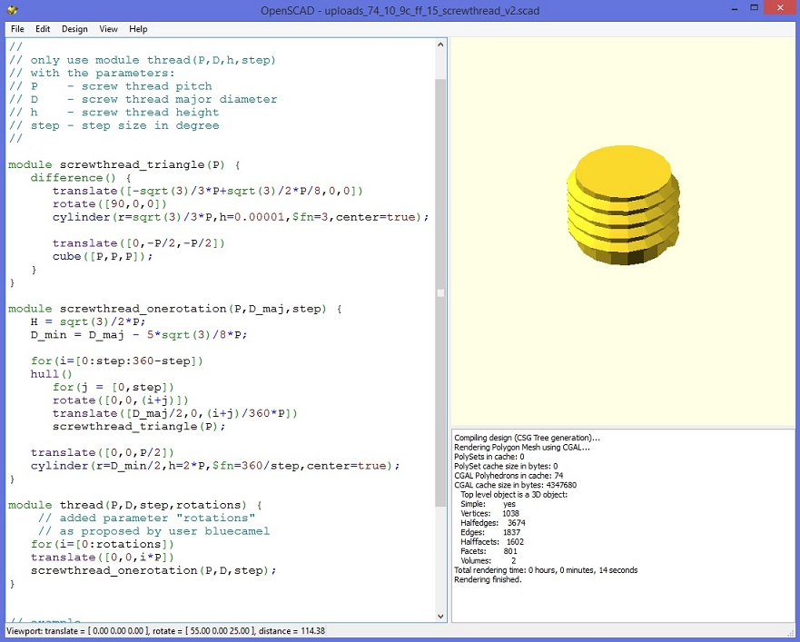
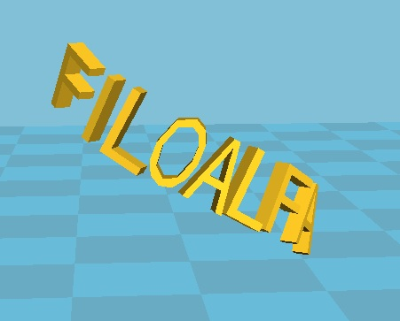
This is the opescand TestWriteCylinder
/* NOTES:
writecylinder(text="text",where=[0,0,0],radius=20,height=40);
Required Parameters (If supplied in this order, identifier is not required)
text="text" : Text to be written
where=[x,y,z] : coordinates of cylinder
radius=mm : radius of cylinder
height=mm : height of cylinder
Optional Parameter:
center=boolean : use this to specify that cylinder is centered on coordinates
(default is center=false)
face="top" : Top of cylinder
face="bottom": bottom of cylinder
face="front" :barrel of cylinder (default if not supplied)
Optional Parameters: (face is not "top" or "bottom")
east=degrees : west= degrees: (moves text east or west around z)
up=mm or down=mm : moves text up or down along Z axis
rotate=degrees : rotates text around Y axis (spirals around cylinder)
Optional Parameters: (face="top" or face="bottom")
east=degrees or west=degrees : rotate text east or west around top
rotate=degrees : (similar to east west but not dependant on text orientation)
ccw=boolean : If true, writes in a counter clockwise direction. (default=false)
middle=mm :moves the text ?mm toward center of top or bottom surface
*/
use < write.scad>
translate([0,0,0])
%cylinder(r=20,h=40);
writecylinder("rotate=90",[0,0,0],20,40,rotate=90);
writecylinder("rotate = 30,east = 90",[0,0,0],20,40,space=1.2,rotate=30,east=90);
writecylinder("ccw = true",[0,0,0],20,40,face="top",ccw=true);
writecylinder("middle = 8",[0,0,0],20,40,h=3,face="top",middle=8);
writecylinder("face = top",[0,0,0],20,40,face="top");
writecylinder("east=90",[0,0,0],20,40,h=3,face="top",east=90);
writecylinder("west=90",[0,0,0],20,40,h=3,face="top",ccw=true,west=90);
writecylinder("face = bottom",[0,0,0],20,40,face="bottom");
this is the opescand ScrewTrhead
// Metric Screw Thread Library
// by Maximilian Karl < karlma@in.tum.de> (2012)
//
//
// only use module thread(P,D,h,step)
// with the parameters:
// P - screw thread pitch
// D - screw thread major diameter
// h - screw thread height
// step - step size in degree
//
module screwthread_triangle(P) {
difference() {
translate([-sqrt(3)/3*P+sqrt(3)/2*P/8,0,0])
rotate([90,0,0])
cylinder(r=sqrt(3)/3*P,h=0.00001,$fn=3,center=true);
translate([0,-P/2,-P/2])
cube([P,P,P]);
}
}
module screwthread_onerotation(P,D_maj,step) {
H = sqrt(3)/2*P;
D_min = D_maj - 5*sqrt(3)/8*P;
for(i=[0:step:360-step])
hull()
for(j = [0,step])
rotate([0,0,(i+j)])
translate([D_maj/2,0,(i+j)/360*P])
screwthread_triangle(P);
translate([0,0,P/2])
cylinder(r=D_min/2,h=2*P,$fn=360/step,center=true);
}
module thread(P,D,h,step) {
for(i=[0:h/P])
translate([0,0,i*P])
screwthread_onerotation(P,D,step);
}
// example
thread(1.0,7.0,3,20);
I try cura and kisslicer to slice the objet, they have different system to make the thing work.
Cura seems to make the slicing on the outer wall so the part will not match really well because the material will go outside the mesh so i make a different file for cura in there i compensated the dimension ( in the x and y axis because when plastic is deposited the direction in which it can expand are the X and Y, on the Z it will find the hotend as obstacle).
So i made a total reduction of 0.4mm in both dimension ( 0,4mm is the diameter of the nozzle divided by 2, for compensate the pattern made on the mesh wall, and multiplied by 2 because the side of the error are 2, so ad the end of the day is de dimension of the nozzle to be compensated.)
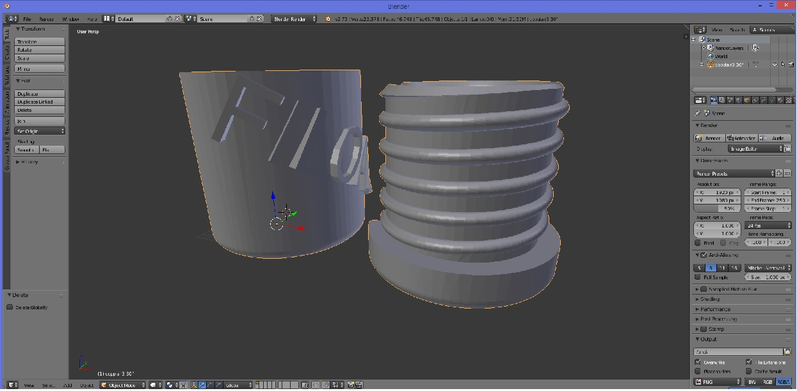
Printed and it works great, it rotate smooth and whit no resistance since the end of the screw.
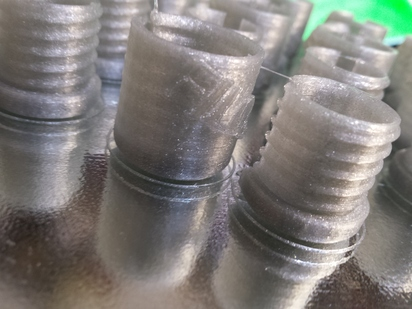
Download zip file of openscad script
Download zip file of all stl file
Different things whit kisslicer thaht have directly a parameter to set there to start to calculare the route of the gcode, called inset surface.
Setting this to compensate the dimensionof the hotend it will make the slicing inside the wall of the mesh.
So the number to set is the dimension of the hotend divided by two.
Printed like this it will work as well.
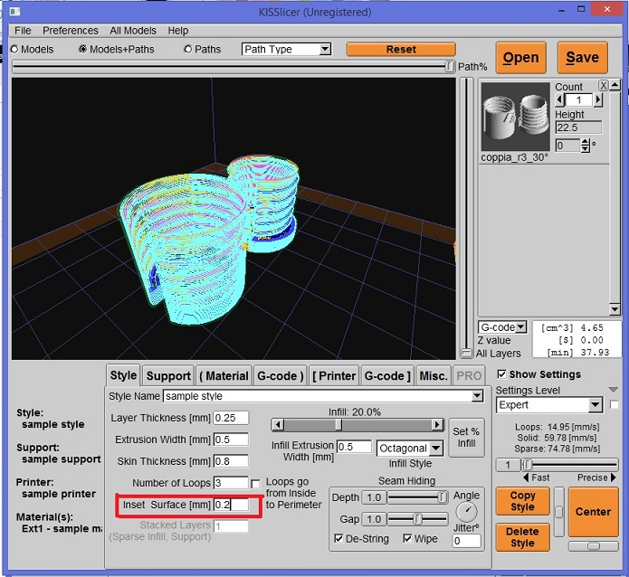
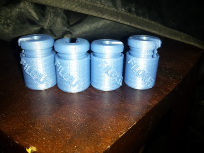
I olso make some experimentation in printig other material like rubber that is not really user friendly.
The best solution is go slow speed and have a stable temperature whit no cooling on printer part.
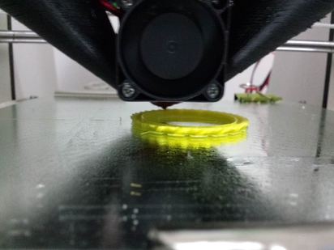
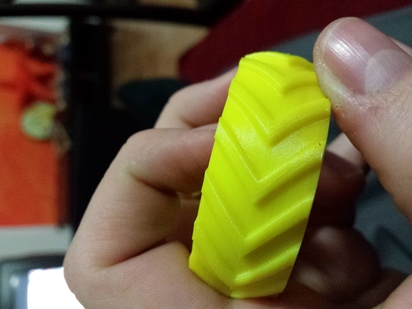
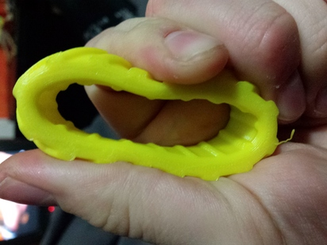
3D Scanning
3d scanning was a little bit orrible this time beacuse of the great product is windows 8.1 that doesn't recognize the kinect on my pc...
I spend like 6 hours trying to set this whit no result so i give up and use the mac of Mattia Ciurinelli.
i didnt print this because i have olready made a 3d scanning/printing before.
Here you can see some screenshot of the 3d scanning of my head made by the kinect and skanect software
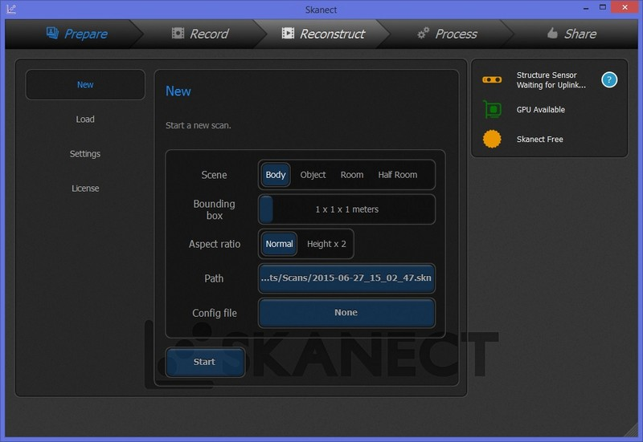
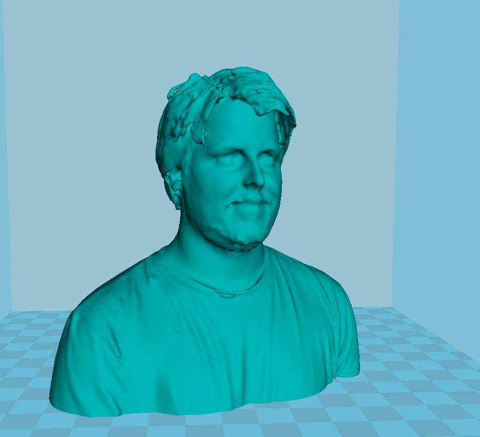
Download zip file resized 3d scan